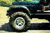
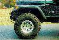
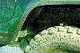
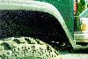

Installing TJ flares on all four corners of my '82 CJ-7 allows me to run 35x14.5 Swamper SSR's with only a 4" suspension lift and 1" body lift. The TJ fender flares provide more clearance allowing me to run larger tires without damaging the body. Aftermarket TJ fender flares come in various widths so there is plenty of fender covering the tires. The TJ fender flare also utilizes an integrated marker light that keeps my Jeep street legal even though I trimmed the fenders.
The good part about using YJ or TJ front flares on a CJ is that the Wrangler front fenders are about 1 1/2" longer than CJ front fender flares. The extra two inches in length on a Wrangler fender is located forward of the wheel well. This allows you to line up a Wrangler flare on a CJ fender with extra room in the back of the wheel well. The back of the front fender is where you will hit first with a big tire. The general shape of a Wrangler rear flare also gives you more room in the rear wheel well.
|  |  |
|
|
|
In the photos note where the rear of the front flare is with respect to the vertical body seam between the body and the metal fender. The TJ flare at the bottom of the rocker panel intersects this seam line. The CJ flare is a good 4-6" forward of this seam. Also notice that the TJ flare is mounted higher on the fender than the CJ flare. This is not as easy to see in this photo, but it makes a big difference.
Now comes the point of no return. Get out the saber saw and buy a new metal blade with 18-24 teeth per inch. I also found that hand tin snips were very useful for some of the final trimming. You have to get yourself in the right frame of mind to cut your fenders, but once you do the job is really very easy.
Place the front flare up against the fender and adjust back and forth, up and down, until you fully understand where it is going to be located. Mark the body with a wax-marking pen so you know where the flare is to be located. You will be first cutting off the complete raised ridge, about a 1" wide strip, around the entire wheel well with the exception of leaving some material at the front of the fender for mounting the flare. YJ and TJ fenders need a flat mounting surface plus this gives you more room. You will be cutting the rear of the wheel well opening flush with the wheel well liner. You can stop here and mount the flares, but it is easy to get much more room.
I then carefully separated the wheel well liner from the fender along the entire rear seam. These are just spot welds. Drive a screwdriver into the seam to open it up and find the spot welds. I then took my sazall, slipped the blade into the opened seam and cut through each spot weld. Obviously the supports from the firewall to the wheel well liner need to be removed. (So far I have not replaced them and have been running this way for several months). I now made a vertical cut about two inches behind the shock going from the bottom of the wheel well liner up where it starts to bend over to form the top of the wheel well. This cut allows the complete rear of the wheel well liner to be pushed back. I pushed the rear of the wheel well back about 2 1/2 to 3" as measured at the bottom of the saw cut. I then just pop-riveted a triangular strip of metal over this opening. Be careful that the final shape of the wheel well liner stays inside the frame rails, otherwise the tires will chew it up when you are turning. You will find that the charcoal canister on the drivers side will need to be relocated, the liner will come very close to the steering shaft, and the clearance for the clutch linkage may need to be accounted for.
The passenger's side is a breeze and there are no interference problems unless you are still using the stock jack or running a very big battery tray. The fender sheet metal at the rear of the wheel well was bent over 90 degrees to lay against the new wheel well liner. I made a couple of cuts so I was only bending a section about 3-4" long at a time. (I'm not a body man.) This was pop-riveted to the liner and adds a fair amount of support to the liner since the fender is double thickness in this location. Obviously everything was carefully painted and sealed to prevent rust.
The following two comparison pictures show that the leading edge of the TJ flare does not mate as nice as the CJ flare. The top front of the CJ fender has a more gradual bend downward than the Wrangler fenders. This can be seen in the photo showing the TJ flare and the fact that it does not mate perfectly to the fender in the front. Only trained eyes will note this area. Careful working of the CJ fender, particularly the raised ridge along the wheel well will minimize flaws in the fit in this region. The photos also show how much higher the TJ flare can be mounted compared to the CJ flare.
Details of the front corner of the flares.
 The rear wheel well is trivial compared to the front. The YJ or TJ flare will allow you to trim the sheet metal away from the front and back lower corners of the rear wheel well due to the general shape of the flare. This helps most people since they hit the back edge first. The TJ rear flare has the same general shape as the YJ flare, but it can be mounted higher than the YJ flare. My rear TJ flare is mounted in the same position (height wise) as a CJ or YJ flare. There is over and inch of flare sticking out below the lower edge of the body, i.e. I could have mounted the flare at least an inch higher on the body. I didn't mount the flare higher since you don't hit the top of the rear wheel well and the bottom opening is monstrous.
 With only minor sheet metal cutting I have opened up the rear lip enough to clear my tires. Note: on the rear you are limited on the amount of opening you can easily do. The front of the rear wheel well defines the interior of the jeep and where the roll bar mounts. There is a lip you can trim off on the inside of the wheel well to gain about 1/2" and there is body sheet metal that can be opened up. Any more is major work. The rear of the wheel well is limited by a bent panel, but there is ample room to trim body sheet metal. Most people don't find the rear wheel well the limiting factor.
Many are confused when they first see the jeep and think it is a new TJ since the flares fit so nicely. Only with more careful observation do I start to get funny looks and people question what they are seeing. Many have said, "I thought the new jeep had coil spring." Only true jeep fanatics recognize what is done.
Here are two pictures of the jeep on a ramp. The first picture was taken when I was running 33" BFG MTs. Note that the 33" tires completely fill the front wheel well. The next picture is with the 35" Swamper SSRs. Note there is more room in the front wheel well with the 35's than with the 33's!
First and foremost, credit goes to Jim Williams who gave me the confidence to try mounting the TJ flares on my 82 CJ-7. Second, Gil Meacham who posted some information on Jeep-L about putting YJ flares on a CJ from his discussions with John Williams. And also, Jeepskate (aka Rodney Lewis) shared some information about TJ flares on his mixed vintage jeep.
{kind=link}
{kind=link}
{kind=link}
{kind=link}